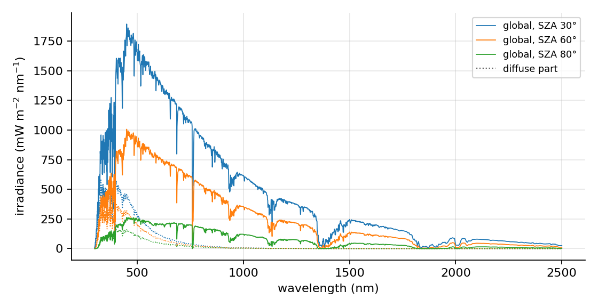
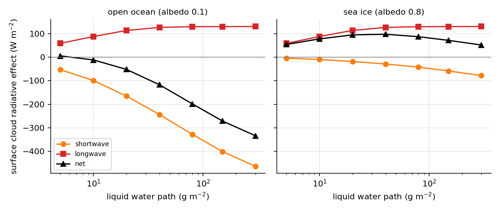
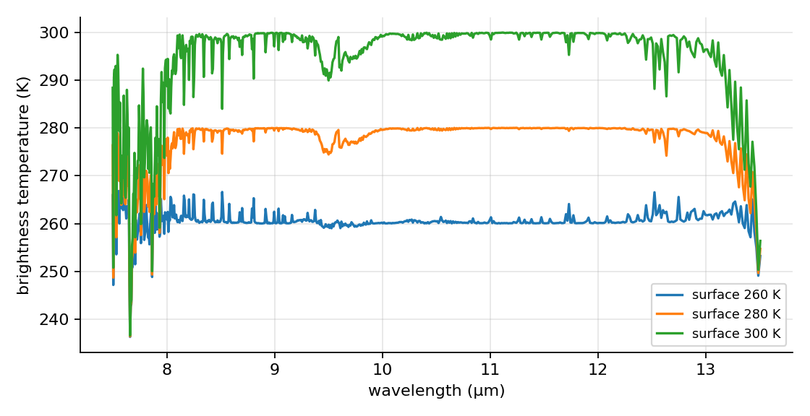

Results & Post-Processing#
The result dataset#
Results come back as an xarray.Dataset with your input
dimensions plus wavelength (spectral runs) and altitude:
ds_sim = ds.pyradtran.run(config_path="config/quickstart.yaml")
ds_sim
<xarray.Dataset> Size: 914kB
Dimensions: (time: 24, wavelength: 1565, altitude: 1)
Coordinates:
* time (time) datetime64[ns] 192B 2025-04-04 ... 2025-04-04T23:00:00
* wavelength (wavelength) float64 13kB 350.0 350.5 ... 2.495e+03 2.5e+03
* altitude (altitude) float64 8B 0.0
Data variables:
edir (time, wavelength, altitude) float64 300kB nan nan ... nan nan
edn (time, wavelength, altitude) float64 300kB nan nan ... nan nan
eup (time, wavelength, altitude) float64 300kB nan nan ... nan nan
status (time) int64 192B 1 1 1 1 0 0 0 0 0 0 0 ... 0 0 0 0 1 1 1 1 1 1
Attributes:
generated_by: pyradtran
pyradtran_version: 0.2.0
history: 2026-11-14T02:32:03: pyradtran 0.2.0 ds.pyradt...
pyradtran_params: {}
pyradtran_libradtran_bin: /opt/libRadtran-2.0.6/bin/uvspec
pyradtran_config: paths: {libradtran_bin: /opt/libRadtran-2.0.6/...
pyradtran_input_example: rte_solver twostr ...
The result is a plain xarray dataset:
ds_sim.edir.sel(wavelength=550, method="nearest").plot() # diurnal cycle
ds_sim.isel(time=12).edn.plot() # one spectrum
ds_sim.where(ds_sim.status == 0) # successful points only
Dimension |
Appears when |
Units |
|---|---|---|
your input dims |
always |
as given |
|
|
nm |
|
always |
km |
Note
altitude carries the simulated level(s) in km, except for a per-point
level (altitude as a data variable, an
aircraft track): the dimension then has length 1 with placeholder 0.0,
and the level of each point is returned in the data variable zout.
The variables are set by output_columns in the config (the uvspec
output_user line). lambda and zout are added automatically for
spectral and multi-altitude runs.
With save_to_file=True (default) the dataset is also written to a
NetCDF file with the configuration embedded as metadata;
output_path= chooses the file, otherwise it is
<output_dir>/<prefix>_<timestamp><suffix>.
Output columns#
The most common output_columns as defined by uvspec.
\(I(\mu, \phi)\) is the diffuse radiance, \(\mu\) the cosine of the zenith
angle, \(\mu_0 = \cos\theta_0\) the cosine of the solar zenith angle, and
\(E_0\) the extraterrestrial irradiance attenuated along the direct beam
by the optical depth \(\tau\):
Column |
Quantity |
Definition |
|---|---|---|
|
direct-beam irradiance on a horizontal surface |
\(E_\mathrm{dir} = \mu_0\,E_0\,e^{-\tau/\mu_0}\) |
|
diffuse downward irradiance |
\(E^\downarrow_\mathrm{diff} = \int_0^{2\pi}\!\!\int_0^1 I(-\mu,\phi)\,\mu\,\mathrm{d}\mu\,\mathrm{d}\phi\) |
|
upward irradiance |
\(E^\uparrow = \int_0^{2\pi}\!\!\int_0^1 I(+\mu,\phi)\,\mu\,\mathrm{d}\mu\,\mathrm{d}\phi\) |
|
global (total downward) irradiance |
\(E_\mathrm{glo} = E_\mathrm{dir} + E^\downarrow_\mathrm{diff}\) |
|
net irradiance |
\(E_\mathrm{net} = E_\mathrm{glo} - E^\uparrow\) |
|
sum of up and down |
\(E_\mathrm{glo} + E^\uparrow\) |
|
radiance in the viewing direction |
\(I(\mu_\mathrm{view}, \phi_\mathrm{view})\) |
|
actinic flux components |
\(\int I\,\mathrm{d}\Omega\) over the respective hemisphere |
|
local albedo |
\(E^\uparrow / E_\mathrm{glo}\) |
|
heating rate |
K day⁻¹ |
|
solar zenith angle used |
degrees |
Any other output_user column of your libRadtran works as well;
pyradtran.describe("output_user") lists them.


Fig. 2 Spectral global (solid) and diffuse (dotted) surface irradiance for
three solar zenith angles (output_columns: [edir, edn], a sza sweep
dimension, mol_abs_param: reptran coarse). Produced by
book/img/make_guide_figures.py.#
Units#
uvspec output has no unit metadata. Units follow from the source and the options:
Run |
Spectral output |
With |
|---|---|---|
|
mW m⁻² nm⁻¹ |
mW m⁻² (divide by 1000 for W m⁻²) |
|
W m⁻² per spectral band (1 cm⁻¹ unless changed) |
W m⁻² |
|
W m⁻² nm⁻¹ |
— |
any + |
K (brightness temperature) |
K |
any + |
unitless |
unitless |
Radiances (uu) carry an additional sr⁻¹.
Warning
Broadband solar results are in mW m⁻², thermal results in W m⁻². Convert before adding shortwave and longwave budgets:
net = ds_solar.enet / 1e3 + ds_thermal.enet # W m⁻²
Derived quantities#
Surface albedo and transmittance
sfc = res.sel(altitude=0)
albedo = sfc.eup / (sfc.edir + sfc.edn)
Cloud radiative effect: the difference in net irradiance between a cloudy and a clear run of the same scene.
net_sw = (solar.edir + solar.edn - solar.eup) / 1e3 # mW → W m⁻²
net_lw = thermal.edn - thermal.eup
cre = (net_sw + net_lw) - (net_sw + net_lw).sel(lwp=0) # lwp=0 is the clear run
Clouds has the full example behind this figure:


Fig. 3 Surface cloud radiative effect of a 500 m thick liquid cloud at Ny-Ålesund (21 June, noon) over a dark and a bright surface.#
Heating rates from the net-flux divergence, with a multi-level
altitude coordinate:
dEdz = res.enet.differentiate("altitude") / 1e3 # W m⁻² per m (altitude in km)
heating = -dEdz / (rho * 1004.0) * 86400 # K day⁻¹; rho(z) in kg m⁻³
Alternatively request the heat column from uvspec.
Instrument channels#
Convolve spectral results with instrument spectral response functions
(SRFs), either in run() or afterwards with
convolve_channels():
import numpy as np
import xarray as xr
from pyradtran import convolve_channels
# srf: DataArray with dims (channel, wavelength), wavelength in nm
wl = np.arange(7500.0, 13500.0, 10.0)
centres = xr.DataArray([8650.0, 10740.0, 12000.0], dims="channel")
srf = np.exp(-0.5 * ((xr.DataArray(wl, dims="wavelength", coords={"wavelength": wl})
- centres) / 150.0) ** 2)
srf = srf.assign_coords(channel=["8.65um", "10.74um", "12.00um"])
channel_ds = ds.pyradtran.run(config_path=cfg, channels=srf) # in one go
channel_ds = convolve_channels(spectral_ds, srf) # or afterwards
keep_spectral=True retains the original spectral variables as
<name>_spectral next to the channel-averaged ones.
Brightness temperature#
brightness_temperature() inverts the Planck
function,
It needs a radiance per nanometre. Thermal runs report per-band
values by default (see Units), so request per_nm output and
state the unit:
from pyradtran import Var, brightness_temperature
res = ds.pyradtran.run(
config_path="config/thermal_window.yaml", # source thermal, output uu
params={
"sur_temperature": Var("tsurf"),
"albedo": 0.0, # emissivity = 1 - albedo
"output_process": "per_nm", # → W m⁻² nm⁻¹ sr⁻¹
},
)
tb = brightness_temperature(res.uu, res.wavelength, "W m-2 nm-1 sr-1")


Fig. 4 Nadir brightness-temperature spectra at 10 km over three surface
temperatures (US standard atmosphere, reptran fine). The atmospheric
window between 8 and 13 µm sees the surface; the ozone band at 9.6 µm
and the water-vapour and CO₂ wings do not.#
Tip
For brightness temperatures at the simulated resolution, let uvspec
convert: params={"output_quantity": "brightness"} returns every
radiance/irradiance column in kelvin. Use brightness_temperature()
when radiances are post-processed first (channel convolution, window
corrections, noise).
In libRadtran the surface emissivity is set through the albedo: \(\varepsilon = 1 - \alpha\).
Sensitivity kernels#
jacobian() runs the batch
twice (base and perturbed) and returns the forward finite-difference
kernel
jac = ds.pyradtran.jacobian("albedo", 0.01, config_path=cfg)
jac["eup"] # d(eup)/d(albedo), same dims as a normal result
The perturbed parameter must be a scalar (a params literal or config
default); perturbing a per-point Var is rejected. Choose \(\Delta x\)
small against the scale on which the response is non-linear but large
against solver noise; 1 % of the parameter’s range is a good start. The
kernel carries the worst status of the two runs per point.
Provenance#
Every result records what produced it in its attrs, and so does the saved NetCDF:
attr |
contents |
|---|---|
|
package version, CF-style history line |
|
the |
|
the full merged configuration as YAML |
|
the annotated uvspec input of the first point (the |
|
which uvspec binary ran |
|
channel names, when |
print(res.attrs["pyradtran_input_example"])
# rte_solver twostr # config
# albedo 0.4 # dataset-var
# ...
import yaml, json
cfg_used = yaml.safe_load(res.attrs["pyradtran_config"])
params_used = json.loads(res.attrs["pyradtran_params"])
The wavelength coordinate carries its unit (nm); jacobian() results
also record jacobian_param,
jacobian_delta, and jacobian_base_value.
Status codes & failure logs#
Every result has a per-point status variable:
value |
meaning |
|---|---|
0 |
ok |
1 |
uvspec failed (values are NaN) |
2 |
skipped (NaN coordinates, or missing/NaT time) |
n_bad = int((res.status != 0).sum())
good = res.where(res.status == 0, drop=True)
When at least one point fails, a failures_<timestamp>.log with the
captured stderr is written to the working directory and the failing
.inp file is kept (see Debugging).
In the dataset at the top of this page the night-time points have
status == 1: the twostr solver rejects a sun below the horizon
(sza > 90°). With rte_solver: disort the same points succeed and
return zeros.